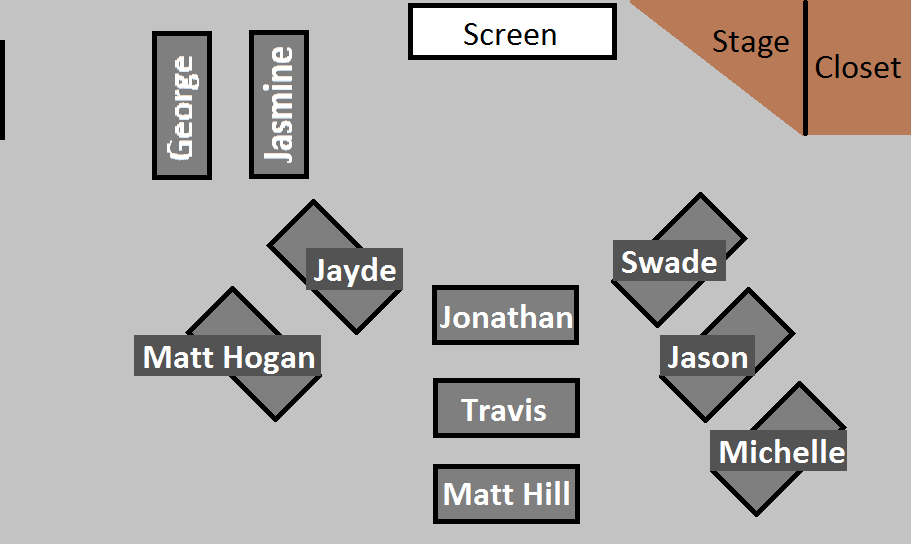
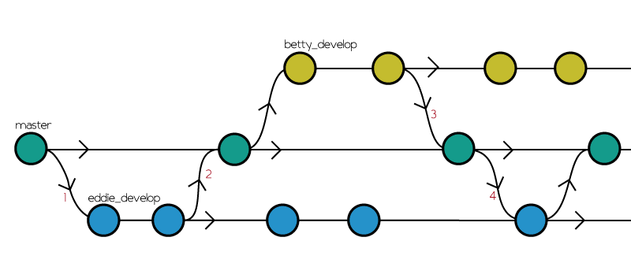
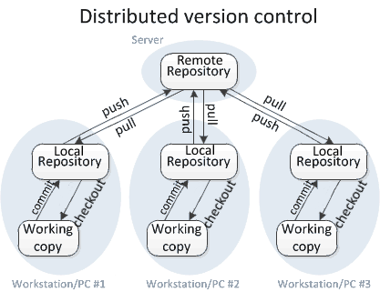

class: center <div id="seating-chart" style="width: 100%;">  </div> --- class: center, middle # Unit 2 ## Web Fundamentals --- class: center, middle # [Class 2](https://education.launchcode.org/web-fundamentals/class-prep/2/) Lecture --- class: center, middle ## No Studio Solution Today --- ### Topics - HTML - CSS - `git` --- ### `git` Topics - branches - why they are useful - why merging works - remote repositories - `push` - `pull` --- ### `git branch` - Branches are used to add new features - Many companies have a master (ops) branch and a development branch - They add features branching off dev --- ### `git branch` <div class="med-img">  </div> --- ### `git branch` <div class="med-img"> <img alt="git Branches" src="../images/git-branch-with-dev-branch.png" /> </div> --- ### Remote Repos - Makes collaboration easier - Allows a team to have a source of truth - Makes deployment easier - Saves repo in the cloud - `push`, `pull`, `remote` --- ### Remote Repos <div class="med-img">  </div> --- ### Graded Exercise: [HTML-Me-Something](https://education.launchcode.org/web-fundamentals/assignments/html-me-something/) - Get started on this now - Due Monday, January 14 - Examples: - [Places I've Lived](https://education.launchcode.org/html-me-something/submissions/chrisbay/index-nocss.html) - [My Favorite Animals](https://aleesham.github.io/html-me-something/) - [Kurti and the Hursti Boys](https://ryanadroll.github.io/html-me-something/merch.html) --- class: center, middle # Q&A --- class: center, middle ## Studio Walkthrough ### [Fireside Story](https://education.launchcode.org/web-fundamentals/studios/fireside-story/) --- ### Studio Walkthrough - Groups of two - One person does Player 1 tasks; one does Player 2 - It is important that each person DOES NOT do both tasks - Do exactly what the directions say - Do NOT change files names - Do NOT pull/push out of order - If you run into a merge conflict, ask me or TA for help